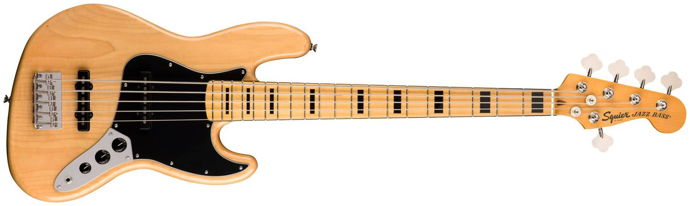
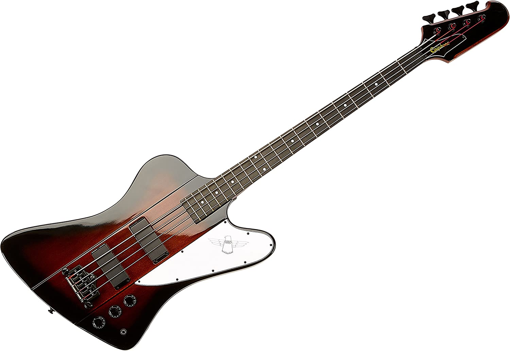
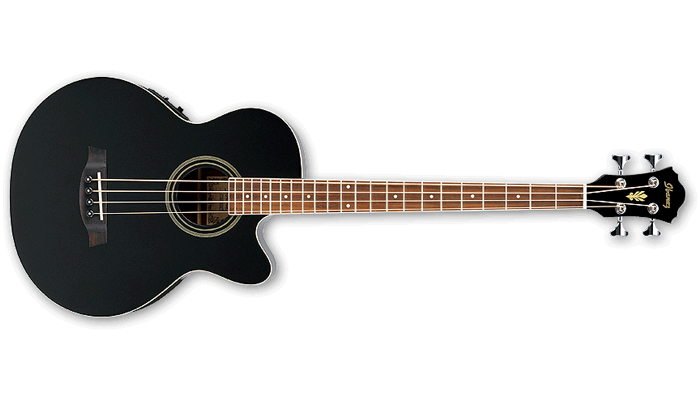

Tipos de contrabaixo
O contrabaixo é o mais grave dos instrumentos de cordas. Tal característica o torna uma peça fundamental em qualquer orquestra, uma vez que o mesmo produz um “preenchimento” musical muito importante e peculiar, servindo como um verdadeiro “alicerce”. O contrabaixo também é um dos maiores instrumentos musicais: geralmente mede 1,80 m de altura e chega a pesar entre 18 e 20 kg. A história do contrabaixo se inicia na Idade Média, mais precisamente no período após o Cisma Greco-Oriental, no qual houve o desdobramento do grupo das primitivas violas em “violas de braço” e “violas de pernas”. Abaixo alguns exemplos de contrabaixos mais utilizados.
Contrabaixo Clássico

O contrabaixo clássico é um cordofone, instrumento de cordas friccionadas por um arco, transpositor (soa uma oitava abaixo do que se lê na partitura), também tocado por pizzicato (beliscado em italiano), com os dedos. Dentre os instrumentos da família das cordas na orquestra é o registro mais grave e também o de maior tamanho. Usado em grandes orquestras em famílias de até 12 instrumentos e usado sozinho na música de câmara, jazz e música popular.
Fender Jazz Bass
O Fender Jazz Bass (ou J-Bass) foi o segundo modelo de contra-baixos elétricos criado por Leo Fender. O Jazz Bass tem um som mais articulado e definido do que o seu antecessor, o Fender Precision Bass. A distinção está no seu tom mais brilhante e rico em médios com menos ênfase na harmônica fundamental. Por causa disso, muitos baixistas que querem se destacar em suas bandas (inclusive em pequenas bandas como os power trios), preferem o Jazz Bass.
Thunderbird
O baixo Thunderbird com seu estilo distinto do corpo inverso é bastante utilizado no rock e heavy metal.
Baixolão
Baixo acústico, também chamado popularmente de baixolão, é um baixo que usa apenas métodos acústicos para projectar o som produzido pelas suas cordas, ao contrário do baixo elétrico. O baixo é um dos raros casos de instrumentos musicais cuja versão eletrificada surgiu antes da acústica; enquanto Leo Fender introduziu no mercado seu primeiro modelo elétrico, o Fender Precision Bass, em 1951, e só depois, em 1972, é que surgiu a versão acústica, por Ernie Ball, de San Luis Obispo, então um os maiores fabricantes estadunidenses de instrumentos musicais.
Baixo 5 cordas

O baixo de 5 cordas é geralmente tocado em ritmos mais pesados do rock, como heavy metal, punk, entre outros, devido ao impacto da corda da nota Si que causa um peso mais encorpado dos graves.
Baixo Fretless

Fretless, o baixo sem trastes Na década de 1970, alguns baixistas retornaram a fazer uso do baixo sem trastes: o Fretless. É o caso de Jaco Pastorius (1951-1987), conhecido por popularizar o baixo sem trastes, tanto como instrumento de acompanhamento quanto como solista.